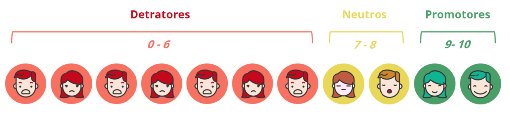

Introdução: A Importância de Medir o eNPS
As experiências direcionam os negócios, e é crucial mensurar e compreender como as pessoas se relacionam com as empresas. Em resposta a essa necessidade, Fred Reichheld e a equipe da Bain & Company desenvolveram o Net Promoter Score (NPS), que rapidamente se tornou uma ferramenta essencial no cenário corporativo. Além disso, adaptando esse conceito para o ambiente interno, surgiu o Employee Net Promoter Score, ou eNPS, focado na lealdade dos colaboradores.
O que é o eNPS?
O eNPS, uma métrica robusta, mede a probabilidade de os colaboradores recomendarem a empresa como um local excelente para trabalhar. Inspirado no NPS, que avalia a lealdade dos clientes, o eNPS aborda a experiência interna e se aplica a diversos aspectos da jornada do colaborador, desde o onboarding até o suporte de TI. Por isso, embora não substitua avaliações completas de engajamento, o eNPS proporciona uma visão ágil e efetiva da percepção dos funcionários, sendo vital para diagnosticar e melhorar o ambiente organizacional.
Vantagens do eNPS
- Permite uma avaliação rápida da satisfação e lealdade dos colaboradores.
- Oferece simplicidade de aplicação, possibilitando coletas de dados mais frequentes.
- Combina análises quantitativas e qualitativas para uma visão abrangente.
Compreendendo a Metodologia do eNPS

Normalmente, o eNPS consiste em duas perguntas cruciais: uma escala de 0 a 10 que mede a probabilidade de recomendar a empresa e uma questão aberta que solicita justificativa para a nota atribuída. Além disso, essas perguntas fornecem insights importantes sobre o clima interno da empresa.
Implementando o eNPS
A implementação do eNPS facilita análises rápidas e periódicas, cruciais para monitorar e influenciar outras métricas importantes como engajamento e retenção. Portanto, é essencial criar estratégias direcionadas para diferentes grupos de colaboradores—promotores, neutros e detratores—para ampliar os pontos fortes e resolver as fragilidades identificadas.
Ferramentas e Análise
Utilizamos ferramentas como Wordcloud para visualizar feedbacks e relatórios de impacto para analisar como a clareza de papéis e a dinâmica de equipe influenciam a lealdade, o que auxilia na criação de estratégias mais efetivas. Assim, essas ferramentas são indispensáveis para o sucesso da estratégia.
Frequência e Práticas Recomendadas
Embora a frequência ideal de aplicação varie, é recomendável evitar a fadiga de pesquisa e a sensação de inatividade. Sugerimos uma aplicação trimestral, que equilibra a frequência de coleta e o tempo para implementar e comunicar ações. Desta forma, é possível manter o engajamento dos colaboradores sem sobrecarregá-los.
Importância do eNPS
Ele destaca-se por sua agilidade e utilidade, fornecendo insights rápidos que impulsionam ações imediatas. O processo anônimo encoraja feedbacks honestos, cruciais para uma gestão eficaz da experiência dos colaboradores. Portanto, essa métrica torna-se um pilar fundamental na gestão de recursos humanos.
Conclusão
O eNPS não só esclarece rapidamente os aspectos que necessitam de melhoria, mas também suporta decisões estratégicas para otimizar a experiência dos colaboradores e, consequentemente, fortalecer a cultura e a marca da empresa. Priorizando a lealdade dos colaboradores, as empresas não apenas aprimoram seu ambiente interno, mas também ampliam seus resultados externos. Assim, o eNPS prova ser uma ferramenta indispensável para qualquer organização focada em excelência e inovação.